mnk-bench results
Where does each game-playing AI fall apart as the board gets bigger? mnk-bench 0.1.0, Python 3.13.16, generated 2026-10-14T08:24:09
MENACE learns tic-tac-toe
MENACE learns tic-tac-toe from scratch by bead reinforcement. Who it practises against matters: against random play it never learns to survive perfect play, while games against a perfect player teach it to draw. Games to learn is the first checkpoint from which it loses at most 5% of games against perfect play.
| trained vs | games | games to learn | matchboxes | win vs random | non-loss vs perfect | optimal-move rate |
|---|---|---|---|---|---|---|
| random | 5000 | - | 551 | 0.895 | 0.575 | 0.898 |
| minimax | 5000 | 3500 | 116 | 0.560 | 1.00 | 0.830 |
| random+minimax | 5000 | 2000 | 410 | 0.910 | 1.00 | 0.944 |
| self | 5000 | - | 509 | 0.840 | 0.680 | 0.843 |
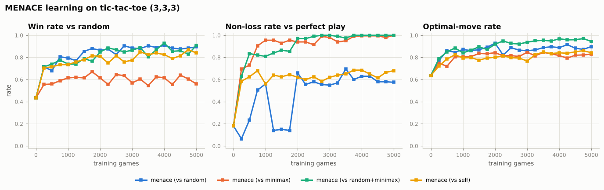
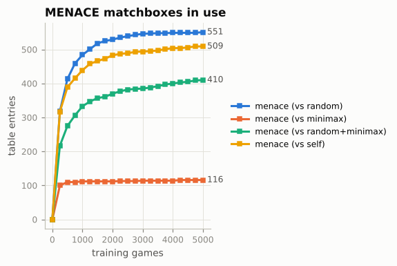
Board symmetries
Storing positions up to rotation and reflection is what got Michie down to about 300 matchboxes. The counts below are exact enumerations of every position MENACE could face.
| config | player | symmetry | skip_forced | matchboxes |
|---|---|---|---|---|
| (3,3,3) | X | yes | yes | 304 |
| (3,3,3) | X | yes | no | 338 |
| (3,3,3) | X | no | yes | 2201 |
| (3,3,3) | X | no | no | 2423 |
| (3,3,3) | O | yes | yes | 280 |
| (3,3,3) | O | yes | no | 289 |
| (3,3,3) | O | no | yes | 2097 |
| (3,3,3) | O | no | no | 2097 |
| (3,4,3) | X | yes | yes | 10657 |
| (3,4,3) | X | yes | no | 10661 |
| (3,4,3) | X | no | yes | 42141 |
| (3,4,3) | X | no | no | 42141 |
| (3,4,3) | O | yes | yes | 9322 |
| (3,4,3) | O | yes | no | 9427 |
| (3,4,3) | O | no | yes | 37012 |
| (3,4,3) | O | no | no | 37422 |
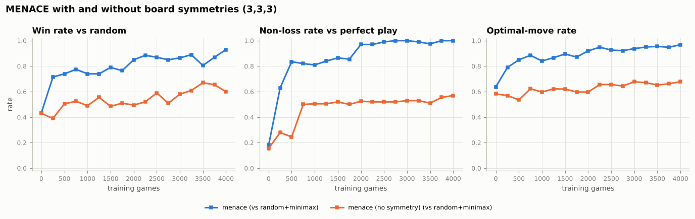
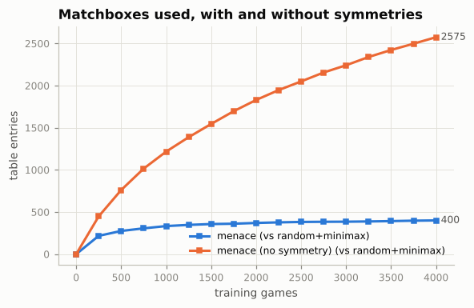
MENACE vs Q-learning vs TD
MENACE, Q-learning and TD(0) all use one table entry per position. Averaged over seeds, after the same number of training games:
| agent | trained vs | games to learn (per seed) | non-loss vs perfect | win vs random | optimal-move rate | table entries | train time (s) |
|---|---|---|---|---|---|---|---|
| menace | random+minimax | 1500, 2500, 3000 | 0.998 | 0.853 | 0.930 | 449.67 | 1.30 |
| menace | self | 6000, 2500, - | 0.932 | 0.868 | 0.963 | 553.33 | 0.317 |
| qlearning | random+minimax | 1500, 1000, 1000 | 1.00 | 0.928 | 0.987 | 500.00 | 1.29 |
| qlearning | self | 6000, 5500, 5000 | 0.993 | 0.927 | 0.984 | 541.33 | 0.397 |
| td | random+minimax | 6000, 4500, 5000 | 1.00 | 0.920 | 0.997 | 529.00 | 1.91 |
| td | self | 5000, 3000, 6000 | 1.00 | 0.925 | 1.00 | 490.33 | 1.26 |
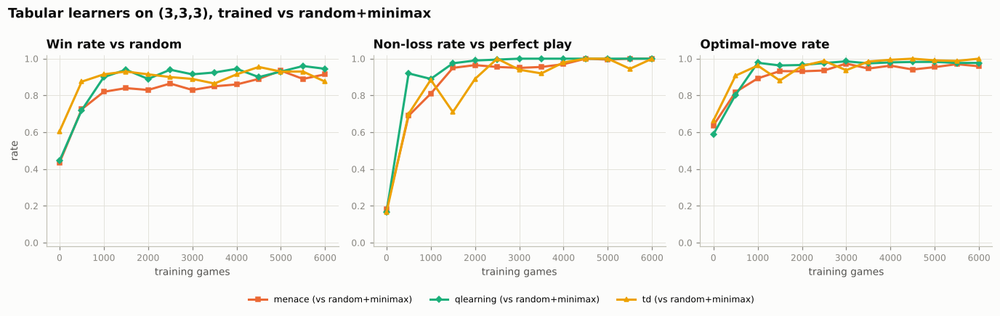
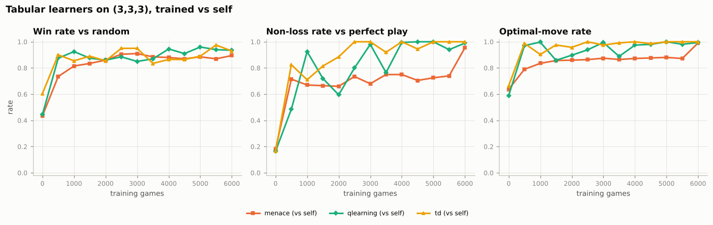
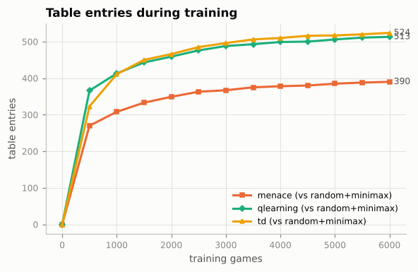
Head to head on tic-tac-toe
Every agent against every other on tic-tac-toe, alternating who moves first.
| agent | games | win | draw | loss | score |
|---|---|---|---|---|---|
| qlearning | 800 | 148 | 652 | 0 | 0.593 |
| alphabeta:depth=4 | 800 | 145 | 655 | 0 | 0.591 |
| mcts:iterations=1000 | 800 | 143 | 651 | 6 | 0.586 |
| alphazero | 800 | 117 | 683 | 0 | 0.573 |
| minimax | 800 | 111 | 689 | 0 | 0.569 |
| rule | 800 | 93 | 707 | 0 | 0.558 |
| td | 800 | 96 | 650 | 54 | 0.526 |
| menace | 800 | 78 | 566 | 156 | 0.451 |
| random | 800 | 8 | 69 | 723 | 0.053 |
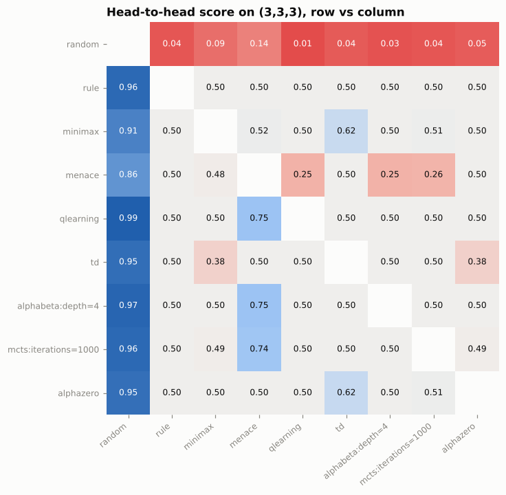
Bigger boards: where tables choke
Tabular learners get the same 3000 training games on every board. As the board grows, the share of positions they have seen before (coverage) collapses, and so does their play; depth-limited alpha-beta has no table and keeps getting relatively stronger.
| board | agent | table entries | coverage | score vs random | score vs rule |
|---|---|---|---|---|---|
| (3,3,3) | menace | 383 | 0.929 | 0.908 | 0.500 |
| (3,3,3) | qlearning | 484 | 1.00 | 0.925 | 0.500 |
| (3,3,3) | td | 401 | 1.00 | 0.950 | 0.500 |
| (3,3,3) | alphabeta:depth=4 | 0 | - | 0.967 | 0.500 |
| (4,4,3) | menace | 3908 | 0.757 | 0.533 | 0.500 |
| (4,4,3) | qlearning | 3605 | 0.727 | 0.642 | 0.500 |
| (4,4,3) | td | 1185 | 0.988 | 0.950 | 0.500 |
| (4,4,3) | alphabeta:depth=4 | 0 | - | 1.00 | 0.500 |
| (4,4,4) | menace | 8840 | 0.581 | 0.492 | 0.267 |
| (4,4,4) | qlearning | 9432 | 0.517 | 0.500 | 0.042 |
| (4,4,4) | td | 9206 | 0.731 | 0.742 | 0.075 |
| (4,4,4) | alphabeta:depth=4 | 0 | - | 0.925 | 0.500 |
| (5,5,4) | menace | 12350 | 0.441 | 0.558 | 0 |
| (5,5,4) | qlearning | 12884 | 0.401 | 0.483 | 0 |
| (5,5,4) | td | 10791 | 0.597 | 0.817 | 0 |
| (5,5,4) | alphabeta:depth=4 | 0 | - | 1.00 | 0.658 |
| (6,6,4) | menace | 16461 | 0.279 | 0.567 | 0 |
| (6,6,4) | qlearning | 16602 | 0.323 | 0.600 | 0 |
| (6,6,4) | td | 12953 | 0.500 | 0.867 | 0 |
| (6,6,4) | alphabeta:depth=4 | 0 | - | 1.00 | 1.00 |
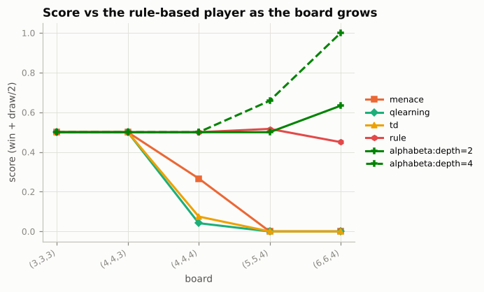
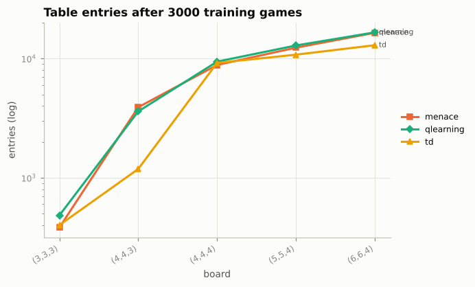
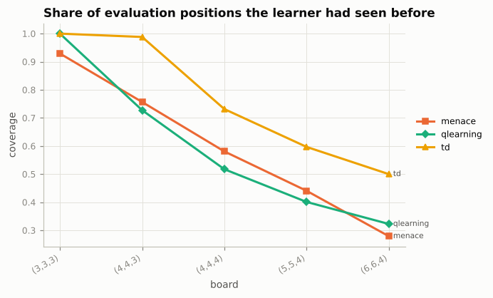
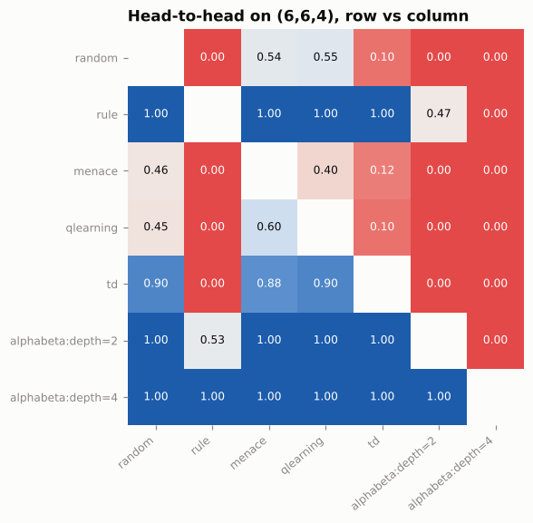
Tournament on (6,6,4)
| agent | games | win | draw | loss | score |
|---|---|---|---|---|---|
| alphabeta:depth=4 | 240 | 240 | 0 | 0 | 1.00 |
| alphabeta:depth=2 | 240 | 181 | 0 | 59 | 0.754 |
| rule | 240 | 179 | 0 | 61 | 0.746 |
| td | 240 | 107 | 0 | 133 | 0.446 |
| random | 240 | 47 | 1 | 192 | 0.198 |
| qlearning | 240 | 46 | 0 | 194 | 0.192 |
| menace | 240 | 39 | 1 | 200 | 0.165 |
Monte Carlo Tree Search
MCTS needs no evaluation function, only playouts. More playouts per move help, but on boards where random games are uninformative (6x6, k=4) it stays weak.
| playouts | board | metric | value | s/move |
|---|---|---|---|---|
| 25 | (3,3,3) | optimal_rate | 0.824 | - |
| 25 | (4,4,4) | score_vs_rule | 0.487 | 0.00024 |
| 25 | (6,6,4) | score_vs_rule | 0 | 0.00056 |
| 25 | (6,7,4)+gravity | score_vs_rule | 0.075 | 0.00044 |
| 50 | (3,3,3) | optimal_rate | 0.871 | - |
| 50 | (4,4,4) | score_vs_rule | 0.500 | 0.00055 |
| 50 | (6,6,4) | score_vs_rule | 0 | 0.001 |
| 50 | (6,7,4)+gravity | score_vs_rule | 0.188 | 0.00066 |
| 100 | (3,3,3) | optimal_rate | 0.879 | - |
| 100 | (4,4,4) | score_vs_rule | 0.500 | 0.00092 |
| 100 | (6,6,4) | score_vs_rule | 0 | 0.003 |
| 100 | (6,7,4)+gravity | score_vs_rule | 0.125 | 0.002 |
| 200 | (3,3,3) | optimal_rate | 0.903 | - |
| 200 | (4,4,4) | score_vs_rule | 0.500 | 0.002 |
| 200 | (6,6,4) | score_vs_rule | 0 | 0.006 |
| 200 | (6,7,4)+gravity | score_vs_rule | 0.612 | 0.003 |
| 400 | (3,3,3) | optimal_rate | 0.969 | - |
| 400 | (4,4,4) | score_vs_rule | 0.500 | 0.005 |
| 400 | (6,6,4) | score_vs_rule | 0 | 0.012 |
| 400 | (6,7,4)+gravity | score_vs_rule | 0.650 | 0.006 |
| 800 | (3,3,3) | optimal_rate | 0.985 | - |
| 800 | (4,4,4) | score_vs_rule | 0.500 | 0.012 |
| 800 | (6,6,4) | score_vs_rule | 0.125 | 0.022 |
| 800 | (6,7,4)+gravity | score_vs_rule | 0.875 | 0.014 |
| 1600 | (3,3,3) | optimal_rate | 1.00 | - |
| 1600 | (4,4,4) | score_vs_rule | 0.500 | 0.022 |
| 1600 | (6,6,4) | score_vs_rule | 0.175 | 0.046 |
| 1600 | (6,7,4)+gravity | score_vs_rule | 0.700 | 0.031 |
| 3200 | (3,3,3) | optimal_rate | 1.00 | - |
| 3200 | (4,4,4) | score_vs_rule | 0.500 | 0.046 |
| 3200 | (6,6,4) | score_vs_rule | 0.188 | 0.087 |
| 3200 | (6,7,4)+gravity | score_vs_rule | 0.850 | 0.064 |
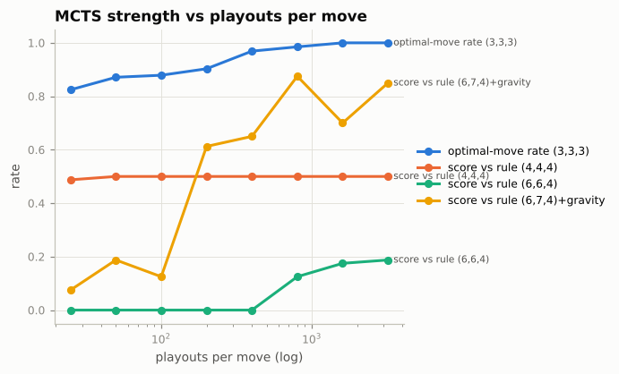
Elo ratings
Ratings fitted to every game of a round robin (Bradley-Terry, random play anchored at 1000, 95% bootstrap intervals).
(3,3,3)
| agent | elo | 95% CI |
|---|---|---|
| alphabeta:depth=4 | 1,525 | 1472 to 1592 |
| mcts:iterations=1000 | 1,523 | 1467 to 1586 |
| qlearning | 1,522 | 1460 to 1584 |
| alphabeta:depth=2 | 1,521 | 1466 to 1588 |
| alphazero | 1,516 | 1459 to 1578 |
| minimax | 1,515 | 1456 to 1582 |
| rule | 1,504 | 1452 to 1568 |
| td | 1,489 | 1433 to 1550 |
| mcts:iterations=200 | 1,483 | 1427 to 1549 |
| menace | 1,418 | 1358 to 1482 |
| random | 1,000 | 1000 to 1000 |
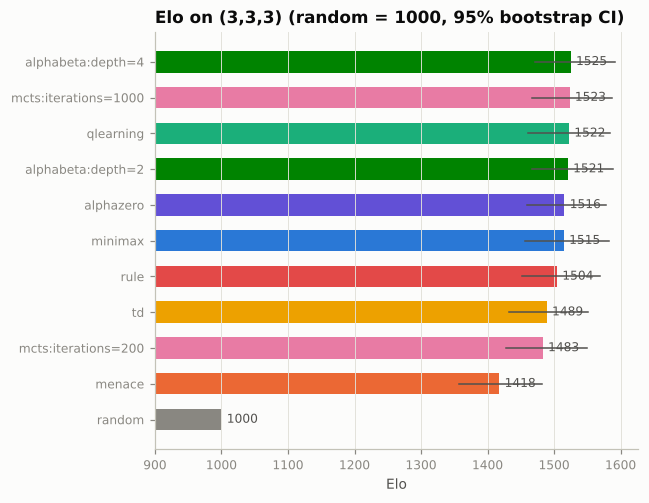
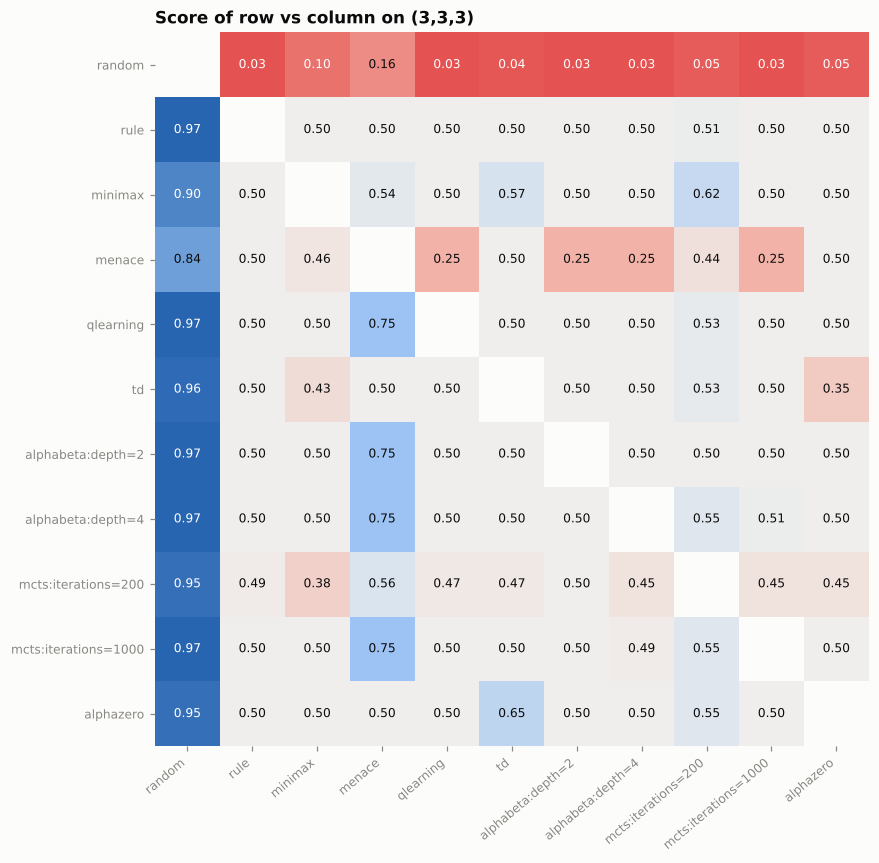
(6,6,4)
| agent | elo | 95% CI |
|---|---|---|
| alphabeta:depth=4 | 3,166 | 2929 to 3532 |
| alphabeta:depth=2 | 2,599 | 2462 to 2817 |
| rule | 2,503 | 2390 to 2726 |
| mcts:iterations=1000 | 2,073 | 1983 to 2219 |
| mcts:iterations=200 | 1,796 | 1728 to 1841 |
| random | 1,000 | 1000 to 1000 |
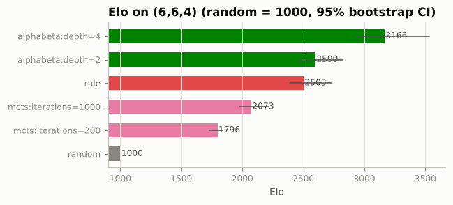
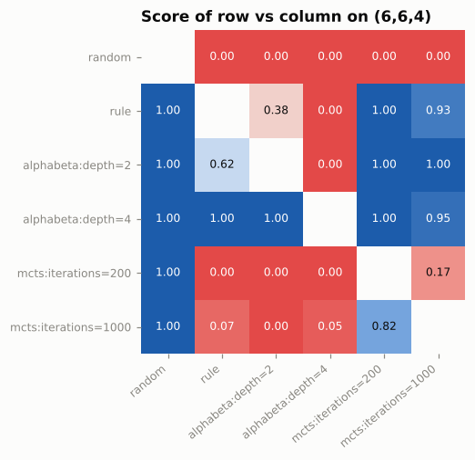
(6,7,4)+gravity
| agent | elo | 95% CI |
|---|---|---|
| alphabeta:depth=2 | 2,320 | 2253 to 2385 |
| alphazero | 2,316 | 2254 to 2398 |
| mcts:iterations=1000 | 2,194 | 2137 to 2260 |
| alphabeta:depth=4 | 2,076 | 2021 to 2126 |
| rule | 1,962 | 1911 to 2015 |
| mcts:iterations=200 | 1,942 | 1894 to 1989 |
| random | 1,000 | 1000 to 1000 |
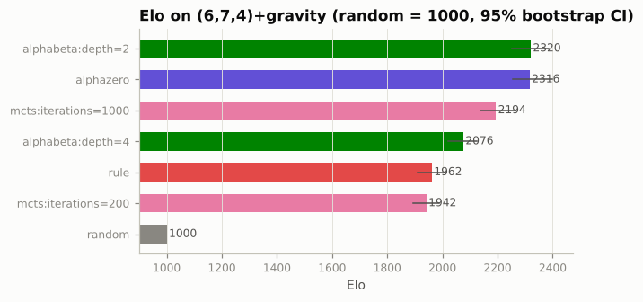
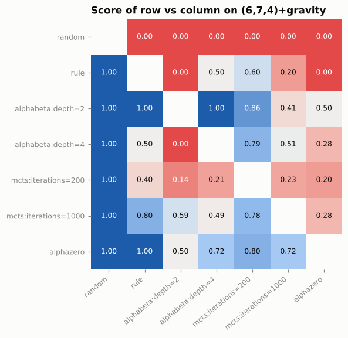
Feasibility map
Each agent estimates its time per move, memory and training time for a board and compares them with the budget: ok, degraded (runs in a cheaper configuration, e.g. shallower search, fewer playouts, or under-trained), or refused. Cells marked * were confirmed by running the agent in a guarded subprocess that kills it if it overruns (aborted).
standard budget: 1.0s/move, 1024 MB, 600s training
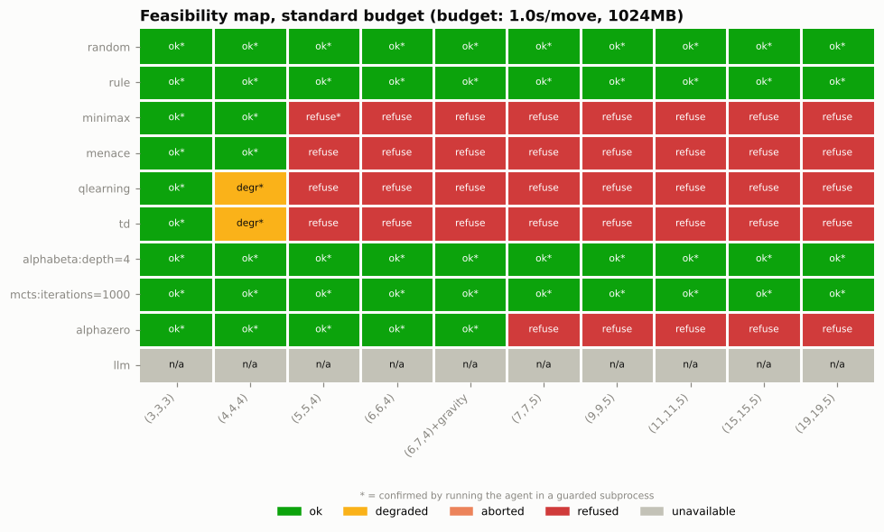
| agent | largest ok board | largest usable board | first refused |
|---|---|---|---|
| random | (19,19,5) | (19,19,5) | - |
| rule | (19,19,5) | (19,19,5) | - |
| minimax | (4,4,4) | (4,4,4) | (5,5,4) |
| menace | (4,4,4) | (4,4,4) | (5,5,4) |
| qlearning | (3,3,3) | (4,4,4) | (5,5,4) |
| td | (3,3,3) | (4,4,4) | (5,5,4) |
| alphabeta:depth=4 | (19,19,5) | (19,19,5) | - |
| mcts:iterations=1000 | (19,19,5) | (19,19,5) | - |
| alphazero | (6,7,4)+gravity | (6,7,4)+gravity | (7,7,5) |
| llm | - | - | - |
tight budget: 0.05s/move, 128 MB, 30s training
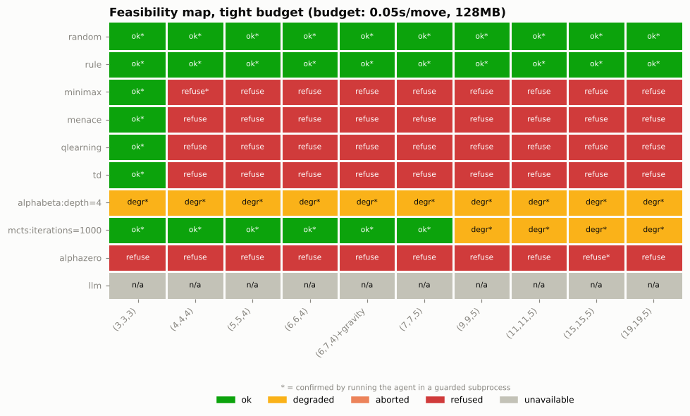
| agent | largest ok board | largest usable board | first refused |
|---|---|---|---|
| random | (19,19,5) | (19,19,5) | - |
| rule | (19,19,5) | (19,19,5) | - |
| minimax | (3,3,3) | (3,3,3) | (4,4,4) |
| menace | (3,3,3) | (3,3,3) | (4,4,4) |
| qlearning | (3,3,3) | (3,3,3) | (4,4,4) |
| td | (3,3,3) | (3,3,3) | (4,4,4) |
| alphabeta:depth=4 | - | (19,19,5) | - |
| mcts:iterations=1000 | (7,7,5) | (19,19,5) | - |
| alphazero | - | - | (3,3,3) |
| llm | - | - | - |
Performance
Throughput of the hot paths and time per move on growing boards. The fast playout (bare cell array, inlined win check, lazy shuffle) is what MCTS uses.
| board | reference playouts/s | fast playouts/s | speedup |
|---|---|---|---|
| (3,3,3) | 61,885 | 132,339 | 2.14 |
| (6,6,4) | 15,165 | 49,221 | 3.25 |
| (6,7,4)+gravity | 22,272 | 48,149 | 2.16 |
| (9,9,5) | 3,736 | 21,805 | 5.84 |
| (15,15,5) | 853.23 | 7,908 | 9.27 |
| (19,19,5) | 361.45 | 5,411 | 14.97 |
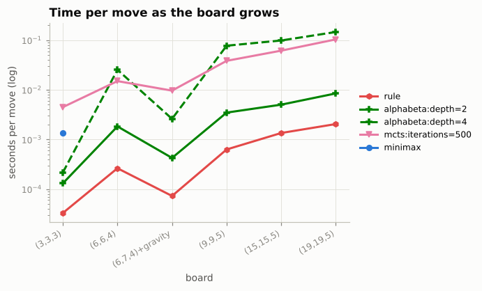
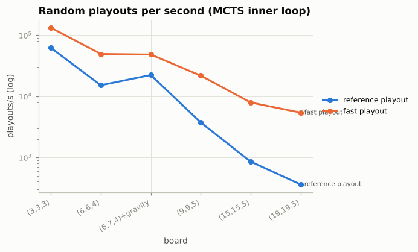
Gomoku (15,15,5)
The full gomoku board (15,15,5): only heuristic search and sampling remain feasible.
| agent | elo | s/move |
|---|---|---|
| alphabeta:depth=4 | 2,351 | 0.051 |
| alphabeta:depth=6 | 2,291 | 0.548 |
| rule | 2,123 | 0.001 |
| alphabeta:depth=2 | 2,104 | 0.004 |
| mcts:iterations=1000 | 1,529 | 0.111 |
| random | 1000.00 | 1.7e-05 |
| agent | games | win | draw | loss | score |
|---|---|---|---|---|---|
| alphabeta:depth=4 | 50 | 42 | 0 | 8 | 0.840 |
| alphabeta:depth=6 | 50 | 39 | 0 | 11 | 0.780 |
| rule | 50 | 30 | 0 | 20 | 0.600 |
| alphabeta:depth=2 | 50 | 29 | 0 | 21 | 0.580 |
| mcts:iterations=1000 | 50 | 10 | 0 | 40 | 0.200 |
| random | 50 | 0 | 0 | 50 | 0 |
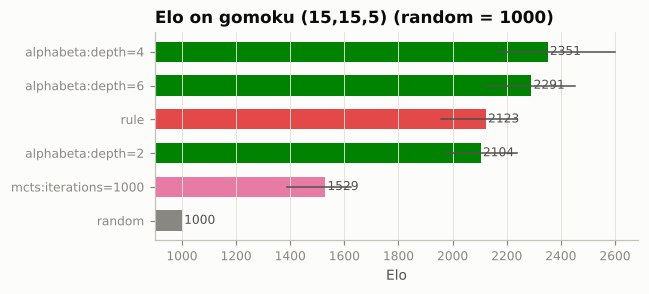
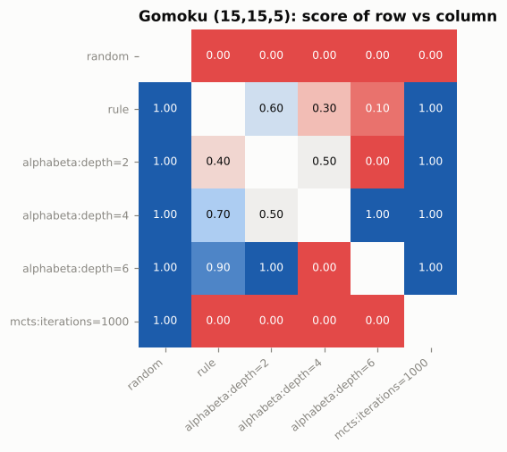
AlphaZero-style agent
A small residual policy/value network guides MCTS (PUCT) and is trained only from self-play games. The table shows each training run's final evaluation.
| board | iterations | self-play games | params | train time (s) | score vs random | score vs rule | non-loss vs perfect | optimal-move rate |
|---|---|---|---|---|---|---|---|---|
| (3,3,3) | 26 | 1250 | 39458 | 77.00 | 0.938 | 0.500 | 1.00 | 1.00 |
| (4,4,4) | 26 | 1000 | 39458 | 776.54 | 0.888 | 0.500 | 1.00 | 0.992 |
| (6,7,4)+gravity | 26 | 1000 | 39458 | 589.48 | 1.00 | 1.00 | - | - |
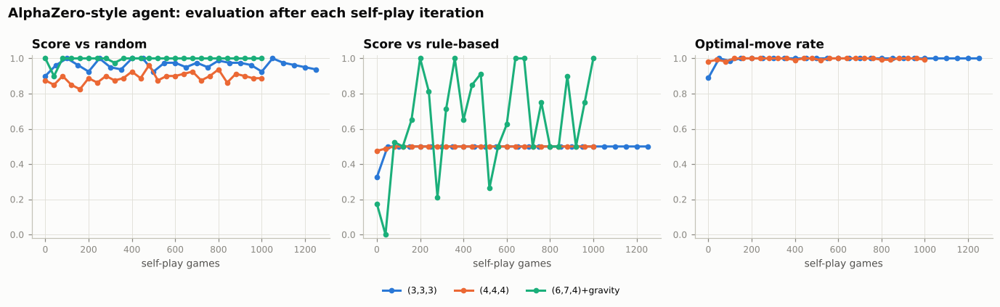
LLM players
No ANTHROPIC_API_KEY was available when these results were generated, so this table comes from the offline mock client (random legal moves with simulated token counts). It checks the pipeline, not a model. Set ANTHROPIC_API_KEY and run `mnk-bench experiment llm` for real numbers.
| agent | config | opponent | games | win | draw | loss | score | sec_per_move | input_tokens_per_move | output_tokens_per_move | cost_per_move_usd | retry_rate | fallback_rate |
|---|---|---|---|---|---|---|---|---|---|---|---|---|---|
| llm:provider=mock | (3,3,3) | random | 10 | 4 | 1 | 5 | 0.450 | 3.6e-05 | 219.79 | 40.00 | 0.00084 | 0 | 0 |
| llm:provider=mock | (3,3,3) | rule | 10 | 0 | 0 | 10 | 0 | 2.8e-05 | 220.19 | 40.00 | 0.00084 | 0 | 0 |
| llm:provider=mock | (6,7,4)+gravity | rule | 4 | 0 | 0 | 4 | 0 | 3.2e-05 | 275.88 | 40.00 | 0.00095 | 0 | 0 |
| llm:provider=mock | (9,9,5) | rule | 2 | 0 | 0 | 2 | 0 | 6.7e-05 | 315.44 | 40.00 | 0.001 | 0 | 0 |